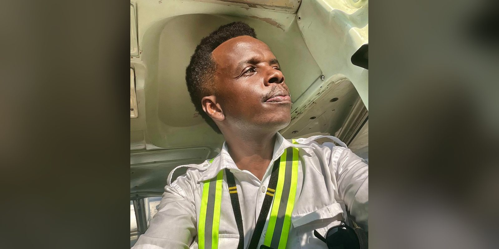
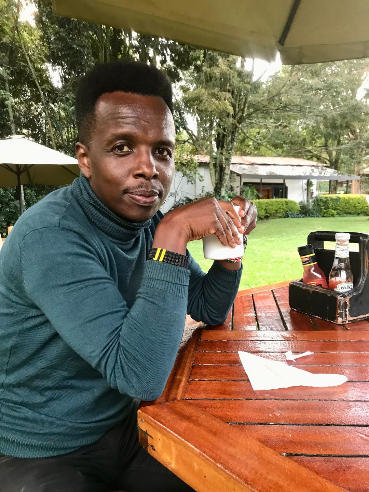

The Life He Had to Let Go
Tim Njiru on flying, ambition and the life beyond the cockpit.

The boy from Buruburu wanted to fly. He said it in primary school, the way children say these things, and he kept saying it long after his report cards suggested he should stop. For the better part of three decades it looked as if the dream belonged to someone else.
“Aviation has been a lifelong dream since I was a child,” Tim Njiru says. Getting there took him the long way round: through a disappointing results slip, a parallel programme at journalism school, nearly two unpaid years in a newsroom and more than twenty years in television. Then, to reach the cockpit, he let that life go.
The numbers that said no
By his own account, Njiru’s school record was average at best. When index numbers were handed out in Class Eight, he was 45th out of 46. He sat KCPE and scored 410 out of 700, not enough to earn a place at any of the schools he had chosen. “It was not a good performance,” he told NTV.
High school ended with a C- in KCSE. For a teenager who wanted to be a pilot, that grade closed the door. “Getting a C- was not a good thing as it disqualified me from what I wanted to pursue in life,” he said. His parents, who had invested heavily in his education, were as disappointed as he was, and told him to repeat Form Four.
He didn’t.
The fallback that became a career
When the Kenya Institute of Mass Communication opened a parallel programme, Njiru applied and was admitted to study Broadcast Journalism. Journalism was the fallback, not the plan. It turned out to be a long and serious career.
He started at KTN as a researcher and worked for a year and eight months without pay. “KTN saw my hard work and gave me a role as a TV presenter for a children’s programme,” he recalls. It was the first of many screens. Over 23 years he worked as a presenter and producer at KTN, NTV and Al Jazeera, much of it on art and travel programming. In 2013 he fronted Ideal Space, a real estate interview show. When Kenya switched from analogue to digital broadcasting in 2015 his contract was halted, and he regrouped as a television producer.

Letting go
At 38, Njiru walked away from the media. That is the life he had to let go: the studios, the familiar face on the screen, and a working identity he had spent two decades building. He does not describe it as a loss. “I now sleep better, eat better, manage money better, travel lighter in heart,” he told Nairobi News.
“It starts when you say ‘I want to start’… Take the step.” — Tim Njiru
The people closest to him saw it coming. His father, mother and siblings were his biggest support through the change. “They were not surprised at all,” he says.
Wheels up
Njiru trained at Flight Training Centre and made his first solo flight on 9 May 2019. He marked it the way aviators do, soaked with buckets of water. Today he holds a private pilot licence, has flown several aircraft around the country and is working towards a commercial licence. From the C- that ruled him out to the day he took the controls, the dream took some 27 years.
Beyond the cockpit
The life he let go has not disappeared. It has followed him on board. Njiru’s ambition now is to become one of Africa’s leading aviation storytellers, bringing the camera and the craft he learned in television into the cockpit with him. The boy from Buruburu got the career he asked for. He simply reached it by way of another one.
This profile draws on Tim Njiru’s interviews with NTV, as reported by Kenyans.co.ke, and with Nairobi News.